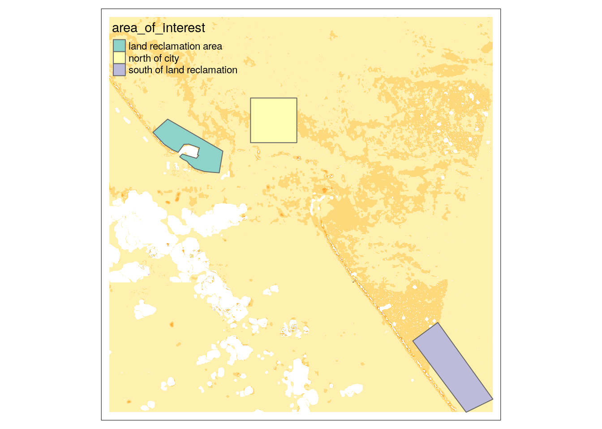
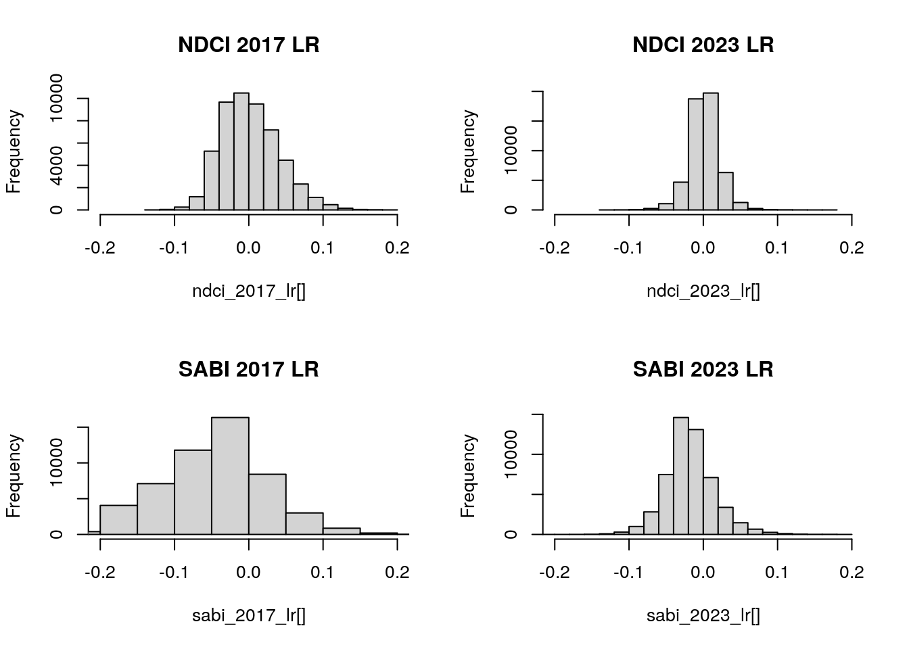
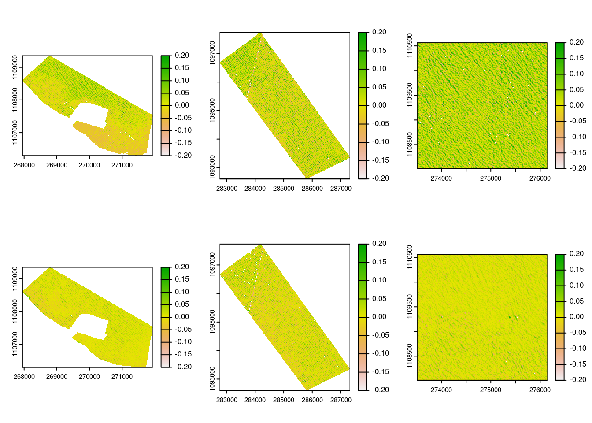
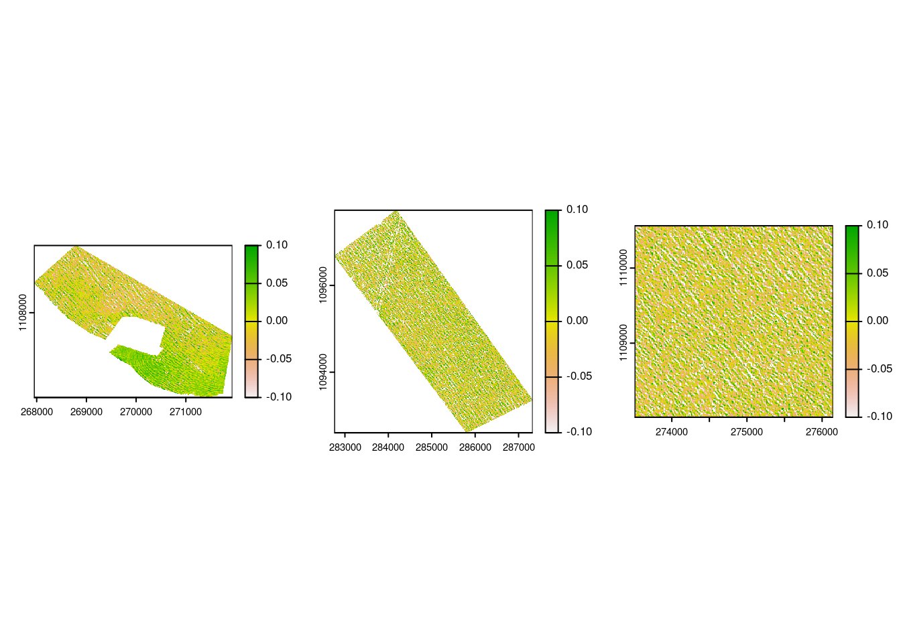
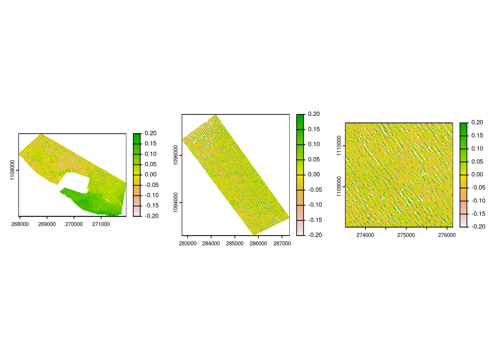

library(rsi)
library(sf)
library(tmap)
library(waterquality)
library(knitr)
#library(diffeR) #useful?Porównanie wartości wskaźników spektralnych jakości wód dla obszaru miasta Limon dla lat 2017 i 2023
Obszar badan
Badania przeprowadzono dla obszaru wodnego, otaczającego miasto Limon w Kostaryce. Porównano ze sobą wskaźniki spektralne, oceniające jakość wody na podstawie obecności chlorofilu a. Jako obszar badań, wybrano rejon na obszarze którego występowały procesy tworzenia nowych lądów. Do porównania wybrano także wody sąsiadujące, wolne od procesów lądotwórczych. Do analizy wybrano zdjęcia z lat 2017 i 2023.
Obszary badań zapisano w pliku geopackage. Zbiór zawiera pięć obszarów badań. W tej pracy posłużono się trzema. Jeden obszar obejmuje teren, na którym tworzono nowy ląd. Do porównania, uwzględniono także teren na północ i południe od miasta Limon.
aoi <- st_read("/workspaces/waterquality_playground/data/costa_rica.gpkg")
aoi_32617 <- st_transform(aoi, 32617)Jako obrazy satelitarne wykorzystano zdjęcia satelitarne Sentinel 2, pozyskane z Microsoft Planetary Computer, przy wykorzystaniu pakietu rsi.
rast_2017 <- terra::rast("/workspaces/waterquality_playground/data/costarica_2017.tif")
rast_2023 <- terra::rast("/workspaces/waterquality_playground/data/costarica_2023.tif")tm_shape(rast_2023[[1]]) +
tm_raster(legend.show = FALSE) +
tm_shape(aoi_32617[c(1, 2, 5), ]) +
tm_polygons(col = "area_of_interest")
Obliczenia
W pracy wykorzystano dwa wskaźniki spektralne: Normalized Difference Chlorophyll Index i surface algal bloom index (SABI). NDCI pochodzi z pakietu rsi, a SABI - z waterquality. Dla usprawnienia procesu obliczania wskaźników skontruowanu funkcję obsługującą wskaźniki z obydwu pakietów. Dodatkowo, obrazy są przycinane do wybranych obszarów badań.
asi <- spectral_indices()
calculate_index <- function(raster, aoi, index_name, use_wq = FALSE, sat = "landsat8") {
raster_crop <- terra::crop(raster, terra::ext(aoi))
raster_mask <- terra::mask(raster_crop, aoi)
if (use_wq) {
index_calculation <- wq_calc(
raster_mask,
alg = index_name,
sat = sat
)
index_calculation
} else {
index_calculation <- calculate_indices(
raster_mask,
asi[asi$short_name %in% c(index_name), ],
output_filename = tempfile(fileext = ".tif")
)
terra::rast(index_calculation)
}
}Napisaną funkcję wykorzystano do obliczenia obydwu wskaźników dla trzech obszarów, dla dwóch lat.
ndci_2017_lr <- calculate_index(rast_2017, aoi_32617[1, 0], "NDCI", sat="sentinel2")
sabi_2017_lr <- calculate_index(rast_2017, aoi_32617[1, 0], "Al10SABI", use_wq = TRUE, sat = "sentinel2")
ndci_2023_lr <- calculate_index(rast_2023, aoi_32617[1, 0], "NDCI", sat="sentinel2")
sabi_2023_lr <- calculate_index(rast_2023, aoi_32617[1, 0], "Al10SABI", use_wq = TRUE, sat = "sentinel2")
ndci_2017_north <- calculate_index(rast_2017, aoi_32617[5, 0], "NDCI", sat="sentinel2")
sabi_2017_north <- calculate_index(rast_2017, aoi_32617[5, 0], "Al10SABI", use_wq = TRUE, sat = "sentinel2")
ndci_2023_north <- calculate_index(rast_2023, aoi_32617[5, 0], "NDCI", sat="sentinel2")
sabi_2023_north <- calculate_index(rast_2023, aoi_32617[5, 0], "Al10SABI", use_wq = TRUE, sat = "sentinel2")
ndci_2017_south <- calculate_index(rast_2017, aoi_32617[2, 0], "NDCI", sat="sentinel2")
sabi_2017_south <- calculate_index(rast_2017, aoi_32617[2, 0], "Al10SABI", use_wq = TRUE, sat = "sentinel2")
ndci_2023_south <- calculate_index(rast_2023, aoi_32617[2, 0], "NDCI", sat="sentinel2")
sabi_2023_south <- calculate_index(rast_2023, aoi_32617[2, 0], "Al10SABI", use_wq = TRUE, sat = "sentinel2")Do obliczenia statystyk opisowych dla wskaźników spektralnych, napisano dwie funkcje, obliczające wartości i zwracające je w formie ramki danych.
calculate_statistics <- function(raster) {
mean_val <- mean(raster[], na.rm = TRUE)
med_val <- median(raster[], na.rm = TRUE)
min_val <- min(raster[], na.rm = TRUE)
max_val <- max(raster[], na.rm = TRUE)
sd_val <- sd(raster[], na.rm = TRUE)
statistics_df <- c(mean_val, med_val, min_val, max_val, sd_val)
}
turn_stats_values_into_df <- function(raster_list) {
result_df <- data.frame()
for (raster in raster_list) {
result_df <- calculate_statistics(raster) %>% rbind(result_df, .)
}
colnames(result_df) <- c("mean", "med", "min", "max", "sd")
rownames(result_df) <- c("land reclamation", "south of city", "north of city")
result_df
}Tak przygotowane funkcje użyto na rastrach ze wskaźnikami
ndci_2017 <- turn_stats_values_into_df(list(ndci_2017_lr, ndci_2017_south, ndci_2017_north))
ndci_2023 <- turn_stats_values_into_df(list(ndci_2023_lr, ndci_2023_south, ndci_2023_north))
sabi_2017 <- turn_stats_values_into_df(list(sabi_2017_lr, sabi_2017_south, sabi_2017_north))
sabi_2023 <- turn_stats_values_into_df(list(sabi_2023_lr, sabi_2023_south, sabi_2023_north))Do obserwacji zmian przestrzennych wskaźników obliczono rastry różnic, odzwierciedlające zmiany wartości wraz z upływem czasu. Dla rastrów różnic, wartości dodatnie świadczą o wyższej wartości w 2023 roku niż w 2017. Wartości ujemne informują natomiast o niższej wartości w roku późniejszym.
ndci_diff_lr <- ndci_2023_lr - ndci_2017_lr
ndci_diff_north <- ndci_2023_north - ndci_2017_north
ndci_diff_south <- ndci_2023_south - ndci_2017_south
sabi_diff_lr <- sabi_2023_lr - sabi_2017_lr
sabi_diff_north <- sabi_2023_north - sabi_2017_north
sabi_diff_south <- sabi_2023_south - sabi_2017_south
ndci <- turn_stats_values_into_df(list(ndci_diff_lr, ndci_diff_south, ndci_diff_north))
sabi <- turn_stats_values_into_df(list(sabi_diff_lr, sabi_diff_south, sabi_diff_north))Wyniki
knitr::kable(ndci_2017, "pipe", digits = 3)| mean | med | min | max | sd | |
|---|---|---|---|---|---|
| land reclamation | 0.002 | -0.001 | -0.135 | 0.196 | 0.039 |
| south of city | 0.012 | 0.011 | -0.534 | 0.348 | 0.050 |
| north of city | 0.032 | 0.031 | -0.161 | 0.267 | 0.051 |
knitr::kable(ndci_2023, "pipe", digits = 3)| mean | med | min | max | sd | |
|---|---|---|---|---|---|
| land reclamation | 0.001 | 0.001 | -0.127 | 0.174 | 0.020 |
| south of city | -0.001 | 0.000 | -0.406 | 0.270 | 0.036 |
| north of city | 0.007 | 0.007 | -0.147 | 0.180 | 0.020 |
Zestawiając ze sobą wartości wskaźnika NDCI między latami 2017 i 2023, widoczne są niskie wartości dla wszystkich obszarów. Wartości średnich i median sięgają rzędu tysięcznych. Dla wskaźnika NDCI, wyższe wartości świadczą o większej obecności chlorofilu a w wodzie. Obszar, na którym tworzono nowy ląd cechował się najmniejszymi średnimi wartościami. Warto odnotować, że na jego obszarze zanotowano także najmniejsze wahania wartości, o czym świadczy najniższa wartość odchylenia standardowego. Zestawiając dane z 2017 i 2023 zauważyć można podobieństwo w trendach zmian wartości między trzema obszarami. Widoczny jest spadek wartości statystyk w roku 2023. Zmniejszyły się także odchylenia, w szczególności dla obszaru na północ od miasta Limon.
knitr::kable(sabi_2017, "pipe", digits = 3)| mean | med | min | max | sd | |
|---|---|---|---|---|---|
| land reclamation | -0.046 | -0.042 | -0.241 | 0.279 | 0.070 |
| south of city | -0.018 | -0.024 | -0.402 | 0.346 | 0.059 |
| north of city | 0.012 | 0.004 | -0.193 | 0.435 | 0.073 |
knitr::kable(sabi_2023, "pipe", digits = 3)| mean | med | min | max | sd | |
|---|---|---|---|---|---|
| land reclamation | -0.018 | -0.020 | -0.212 | 0.189 | 0.033 |
| south of city | -0.021 | -0.023 | -0.343 | 0.310 | 0.049 |
| north of city | -0.007 | -0.010 | -0.229 | 0.343 | 0.034 |
Podobny trend jest widoczny także dla wskaźnika SABI. Wraz z upływem czasu, odnotowano zmniejszenie odchyleń wartości od średniej. Przeciwny trend zaobserwowano natomiast dla wartości obszaru lądotwórczego. Średnia i mediana wzrosły z czasem, w przeciwieństwie dla terenów przy mieście.
par(mfrow = c(2, 2))
hist(ndci_2017_lr[], xlim = c(-0.2, 0.2), main = "NDCI 2017 LR")
hist(ndci_2023_lr[], xlim = c(-0.2, 0.2), main = "NDCI 2023 LR")
hist(sabi_2017_lr[], xlim = c(-0.2, 0.2), main = "SABI 2017 LR")
hist(sabi_2023_lr[], xlim = c(-0.2, 0.2), main = "SABI 2023 LR")
Spadek rozrzutu wartości jest widoczny również na wykresach rozkładu. Przedstawione histogramy opisują wartości wskaźników dla obszaru tworzenia lądu. Wartości w 2023 roku skupiały się bardziej wokół zera, gdzie dla danych z 2017 widoczny jest większy rozkład danych.
par(mfrow = c(2, 3))
terra::plot(ndci_2017_lr, range = c(-0.2, 0.2))
terra::plot(ndci_2017_south, range = c(-0.2, 0.2))
terra::plot(ndci_2017_north, range = c(-0.2, 0.2))
terra::plot(ndci_2023_lr, range = c(-0.2, 0.2))
terra::plot(ndci_2023_south, range = c(-0.2, 0.2))
terra::plot(ndci_2023_north, range = c(-0.2, 0.2))
Obserwując rozkład przestrzenny wartości wskaźników dla poszczególnych obszarów (kolejno od lewej obszar tworzenia lądu, obszar na południe od miasta i obszar na północ od miasta), widoczne jest mniejsze zróżnicowanie wartości w 2023 (dolny rząd) w porównaniu do 2017 (górny rząd).
knitr::kable(ndci, "pipe", digits = 3)| mean | med | min | max | sd | |
|---|---|---|---|---|---|
| land reclamation | -0.001 | 0.003 | -0.202 | 0.208 | 0.043 |
| south of city | -0.012 | -0.011 | -0.489 | 0.540 | 0.062 |
| north of city | -0.026 | -0.024 | -0.308 | 0.220 | 0.055 |
Dla wskaźnika NDCI, obszary na północ i południe od miasta odnotowały spadek średnich wartości w czasie. Odchylenie standardowe dla nich było jednak większe od obszaru, na którym tworzono nowy ląd. Obszar ten, ponownie w przeciwieństwie od reszty, cechował się minimalnym spadkiem wartości po upływie sześciu lat.
par(mfrow = c(1, 3))
terra::plot(ndci_diff_lr, range = c(-0.1, 0.1))
terra::plot(ndci_diff_south, range = c(-0.1, 0.1))
terra::plot(ndci_diff_north, range = c(-0.1, 0.1))
Rozkład przestrzenny rastrów różnic wskaźników NDCI jest mało zróżnicowany. Jedynym wyjątkiem jest obszar na południu od terenu tworzenia nowego lądu, gdzie wartości wskaźnika wzrosły w 2023 roku.
knitr::kable(sabi, "pipe", digits = 3)| mean | med | min | max | sd | |
|---|---|---|---|---|---|
| land reclamation | 0.028 | 0.028 | -0.286 | 0.347 | 0.072 |
| south of city | -0.003 | 0.001 | -0.422 | 0.414 | 0.075 |
| north of city | -0.019 | -0.013 | -0.442 | 0.314 | 0.080 |
Zmiany wartości wskaźnika SABI zanotowały podobny trend do zmian wartości wskaźnika NDCI. Wartości dla obszarów na północ i południe od miasta zmalały, posiadały duże odchylenia standardowe. Obszar tworzenia lądu zanotował wzrost wartości SABI, jednocześnie posiadał mniejsze wachania od reszty obszarów.
par(mfrow = c(1, 3))
terra::plot(sabi_diff_lr, range = c(-0.2, 0.2))
terra::plot(sabi_diff_south, range = c(-0.2, 0.2))
terra::plot(sabi_diff_north, range = c(-0.2, 0.2))
Rozkład przestrzenny zmian dla wskaźnika SABI jest również podobny do rozkładu wskaźnika NDCI. WIdoczne jest małe zróżnicowanie. Jedynym wyjątkiem jest południowy region na obszarze tworzenia nowego lądu.
Podsumowanie i wnioski
Wraz z upływem czasu, zaobserwowano zmiany w wartościach wskaźników spektralnych dla wód wokół miasta Limon. Według obliczonych wartości, wraz z upływem czasu, obecność chlorofilu a zmalała dla terenów na północ i południe od miasta. Dla obszaru, na terenie którego odbywały się procesy tworzenia nowych lądów, wystąpił przeciwny trend. Na nim występowanie chlorofilu a wzrosło. Świadczy to o pozytywnym wpływie konstrukcji nowych lądów na jakość otaczających ich wód.
W tej pracy wykorzystano jeden obraz dla każdego roku. W dalszych analizach, warto uwzględnić kilka obrazów satelitarnych dla każdego roku, najlepiej z różnych sezonów. Pozwoli to wykluczyć wpływ obecnych warunków klimatycznych na pozyskane wartości, zwłaszcza że obrazy satelitarne mogą nie być dostępne dla tych samych dat.
Obszary badań powinny też mieć powierzchnię bardziej zbliżoną sobie. Problemem jest fakt wycięcia fragmentu terenu na obszarze, na którym powstawały lądy. Istotne jest wyodrębnienie lądów z obszarów badań, ponieważ mocno wpływają na wartości wskaźników dotyczących jakości wody.